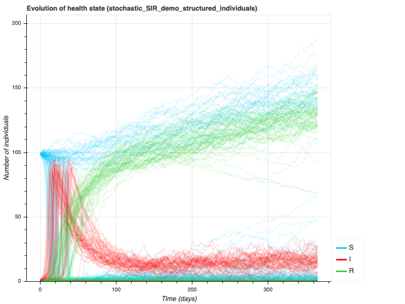
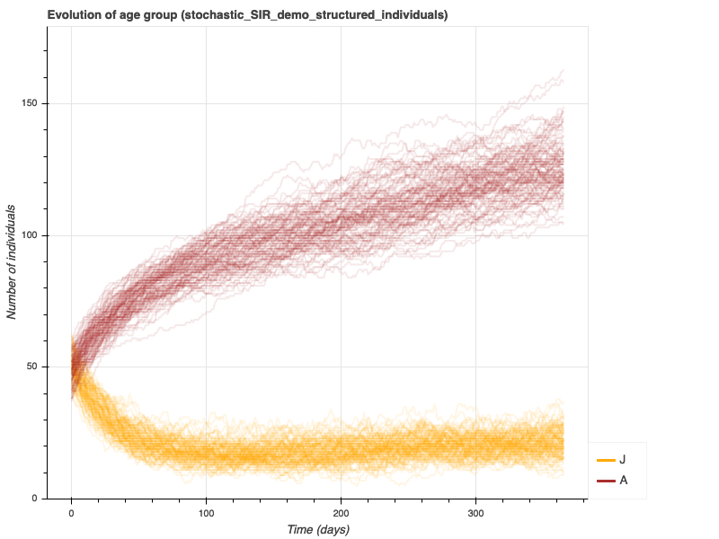

Model 3b (Model 3 transformed to IBM)¶
File with full comments: model3b.yaml
---
model_name: stochastic_SIR_demo_structured_individuals
model_info:
abstract: 'This model is a simple discrete-time, stochastic, hybrid
SIR model with demography and structured population. Individuals
have a variable shedding level.'
author: 'Sebastien Picault (sebastien.picault@inra.fr)'
time_info:
time_unit: days
delta_t: 1
origin: 'January 1'
total_duration: '365'
levels:
population:
desc: 'level of the population'
aggregation_type: hybrid
contains:
- individuals
aggregate_vars:
- name: beta
collect: beta_i
operator: 'sum'
individuals:
desc: 'level of the individuals'
grouping:
population:
infection:
machine_name: health_state
key_variables: [health_state, age_group]
aging:
machine_name: age_group
key_variables: [age_group]
processes:
population:
- infection
- aging
state_machines:
health_state:
desc: 'The state machine which defines the evolution of health states'
states:
- S:
name: 'Susceptible'
desc: 'suceptible of becoming infected'
fillcolor: 'deepskyblue'
default: yes
- I:
name: 'Infectious'
desc: 'infected and able to transmit the disease'
fillcolor: 'red'
on_enter:
- set_var: 'beta_i_max'
value: 'initial_beta_i'
- set_var: 'beta_i'
value: 'beta_i_max'
on_stay:
- set_var: 'beta_i'
value: 'IfThenElse(duration_in_health_state <= shedding_threshold,
beta_i_max,
beta_i_max * duration_in_health_state / shedding_threshold)'
on_exit:
- set_var: 'beta_i'
value: 0
- R:
name: 'Resistant'
desc: 'recovered and resistant to new infections'
fillcolor: 'limegreen'
transitions:
- from: S
to: I
rate: 'is_J * force_infection_juveniles + is_A * force_infection_adults'
- {from: I, to: R, rate: 'gamma'}
age_group:
desc: 'The state machine which defines the evolution of age groups'
states:
- J:
name: 'Juvenile'
desc: 'juvenile individuals'
fillcolor: 'orange'
- A:
name: 'Adult'
desc: 'adult individuals (producing new juveniles)'
fillcolor: 'brown'
- D:
name: 'Dead'
desc: 'compartment to put dead individuals'
fillcolor: white
autoremove: yes
transitions:
- {from: J, to: A, rate: 'm'}
- {from: J, to: D, rate: 'mu_J * total_population / K'}
- {from: A, to: D, rate: 'mu_A * total_population / K'}
productions:
- {from: A, to: J, rate: 'b', prototype: 'newborn'}
parameters:
initial_population_size:
desc: 'initial number of individuals in the population'
value: 100
initial_infected:
desc: 'initial number of infectious individuals in the population'
value: 1
initial_beta_i:
desc: 'initial transmission rate for newly infected individuals'
value: '0.1 * (0.5 + random_gamma(0.5, 0.5))'
shedding_threshold:
desc: 'duration after which shedding increases with time (days)'
value: 15
between_group_factor:
desc: 'factor accounting for between-group transmission'
value: 0.1
gamma:
desc: 'recovery rate'
value: '1/30'
b:
desc: 'the birth rate (/day)'
value: 0.005
m:
desc: 'maturation rate, at which juveniles become adults (/day)'
value: '1/50'
mu_J:
desc: 'base mortality rate for juveniles (/day)'
value: 0.01
mu_A:
desc: 'base mortality rate for adults (/day)'
value: 0.0025
K:
desc: 'carriage capacity for the environment'
value: 150
force_infection_juveniles:
desc: 'force of infection experienced by juveniles'
value: 'beta_I_J * total_I_J / (total_J + 1e-9) +
between_group_factor * beta_I_A * total_I_A / (total_A + 1e-9)'
force_infection_adults:
desc: 'force of infection experienced by adults'
value: 'beta_I_A * total_I_A / (total_A + 1e-9) +
between_group_factor * beta_I_J * total_I_J / (total_J + 1e-9)'
prevalence_J:
desc: 'prevalence in juvenile group'
value: 'total_I_J / (total_J + 1e-9)'
prevalence_A:
desc: 'prevalence in adult group'
value: 'total_I_A / (total_A + 1e-9)'
prototypes:
individuals:
- healthy:
desc: 'healthy individuals'
health_state: S
age_group: random
beta_i: 0
beta_i_max: 0
- infected:
desc: 'infected individuals'
health_state: I
age_group: J
beta_i: 'initial_beta_i'
beta_i_max: 'initial_beta_i'
- newborn:
desc: 'newborn individuals assuming no vertical transmission'
health_state: S
age_group: J
beta_i: 0
beta_i_max: 0
initial_conditions:
population:
- prototype: healthy
amount: 'initial_population_size - initial_infected'
- prototype: infected
amount: 'initial_infected'
outputs:
type: csv
population:
period: 1
extra_vars:
- prevalence_A
- prevalence_J
- beta_I_J
- beta_I_A
...
To run the model for 100 stochastic repetitions:
emulsion run --plot model3b.yaml -r 100 --silent
Which produces the following outputs:
 {kind=link}
{kind=link}

To produce the diagrams of the state machines which control health states and age groups:
emulsion diagrams model3b.yaml
Which gives:
To view model parameters:
emulsion show model3b.yaml
which produces:
EmulsionModel "stochastic_SIR_demo_structured_individuals"
AVAILABLE PARAMETERS (with their current value)
------------------------------------------------------------------------
MODEL PARAMETERS
------------------------------------------------------------------------
total_duration.................................................365.0
initial_population_size........................................100.0
initial_infected.................................................1.0
shedding_threshold..............................................15.0
between_group_factor.............................................0.1
gamma............................................0.03333333333333333
b..............................................................0.005
m...............................................................0.02
mu_J............................................................0.01
mu_A..........................................................0.0025
K..............................................................150.0
delta_t..........................................................1.0
------------------------------------------------------------------------
It is also possible to view the description of the initial transmission rate and the forces of infection experienced by each group:
emulsion describe model3b.yaml initial_beta_i force_infection_juveniles force_infection_adults
which produces:
EmulsionModel "stochastic_SIR_demo_structured_individuals"
ROLE OF PARAMETERS (AND CURRENT DEFINITION)
------------------------------------------------------------------------
initial_beta_i [parameter]:
initial transmission rate for newly infected individuals
0.1 * (0.5 + random_gamma(0.5, 0.5))
force_infection_juveniles [parameter]:
force of infection experienced by juveniles
beta_I_J * total_I_J / (total_J + 1e-9) + between_group_factor * beta_I_A * total_I_A / (total_A + 1e-9)
force_infection_adults [parameter]:
force of infection experienced by adults
beta_I_A * total_I_A / (total_A + 1e-9) + between_group_factor * beta_I_J * total_I_J / (total_J + 1e-9)
------------------------------------------------------------------------